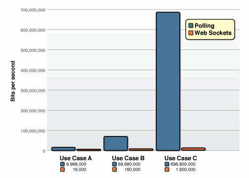
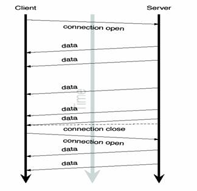
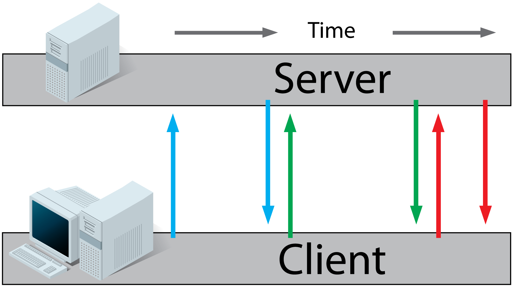
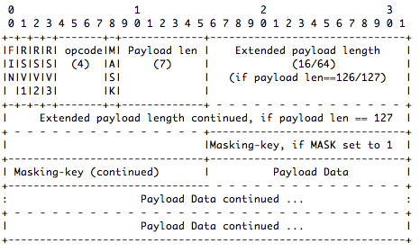
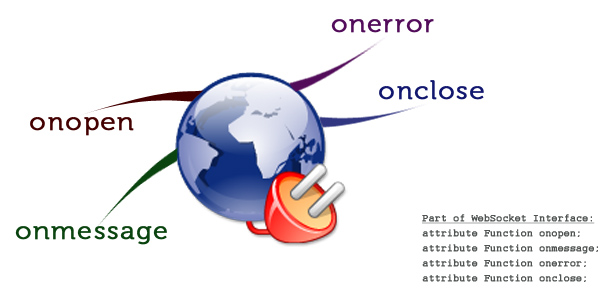
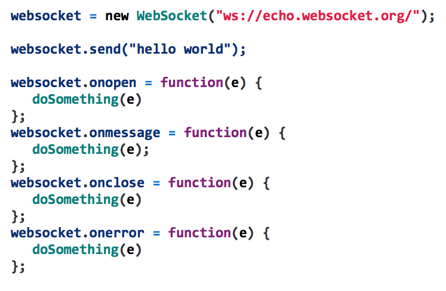
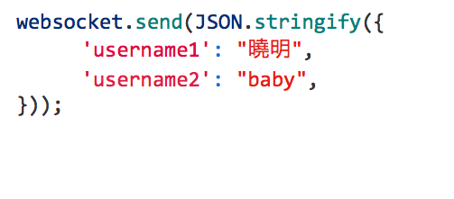

WebSocket 實作分享
什麼是websocket?
Web Socket 是 HTML5 開始提供的一種瀏覽器與伺服器間進行全雙工通訊的網路技術。
WebSocket 通訊協定於 2011 年被 IETF 定為標準
RFC 6455
WebSocketAPI 被 W3C 定為標準。在 WebSocket API 中，瀏覽器和伺服器需要做一個握手(handshake)的動作
根據 websocket.org的說明:
HTML5 Web Sockets 不僅僅只是進步 更是革命性的前進 提供更 即時的、事件導向的 web app
HTML5 Web Sockets 不僅僅只是進步 更是革命性的前進 提供更 即時的、事件導向的 web app
web server 交互過程
Http Request:
- AJAX
- Polling
- Comet
- Long Polling
- WebSocket
polling


Comet

server.php:
client.html:
<script type="text/javascript">
doWrite(1394443917);
</script>
doWrite(1394443917);
</script>
client.html:
var doWrite = function(text){
target.innerHTML = target.innerHTML + text;
}
target.innerHTML = target.innerHTML + text;
}
long-polling

WebSocket
Web Socket 協議
以下是引自 IETF RFC 6455 的範例:
用戶端必需在 HTTP header加入:
GET /chat HTTP/1.1
Host: server.example.com
Upgrade: websocket
Connection: Upgrade
Sec-WebSocket-Key: dGhlIHNhbXBsZSBub25jZQ==
Origin: http://example.com
Sec-WebSocket-Protocol: chat, superchat
Sec-WebSocket-Version: 13
Host: server.example.com
Upgrade: websocket
Connection: Upgrade
Sec-WebSocket-Key: dGhlIHNhbXBsZSBub25jZQ==
Origin: http://example.com
Sec-WebSocket-Protocol: chat, superchat
Sec-WebSocket-Version: 13
WebSocket 伺服器端回應請求:
HTTP/1.1 101 Switching Protocols
Upgrade: websocket
Connection: Upgrade
Sec-WebSocket-Accept: s3pPLMBiTxaQ9kYGzzhZRbK+xOo=
Sec-WebSocket-Protocol: chat
Upgrade: websocket
Connection: Upgrade
Sec-WebSocket-Accept: s3pPLMBiTxaQ9kYGzzhZRbK+xOo=
Sec-WebSocket-Protocol: chat
從伺服器端傳送數據
RFC 6455 的 frame header

Web Socket 實現 - Server 端
* Kaazing WebSocket Gateway
* mod_pywebsocket
* node.js：socket.io
Web Socket 實現 - Client 端


用 JSON 傳輸物件

聊天室
html5 遊戲 SebSocket相關